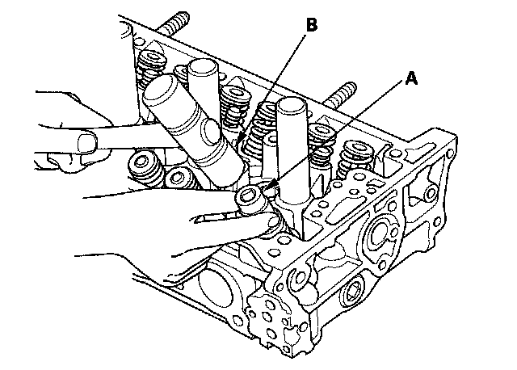
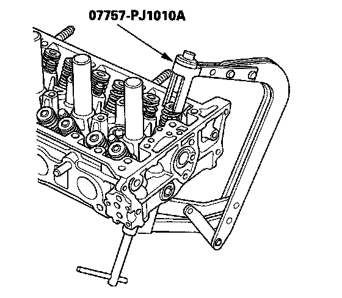
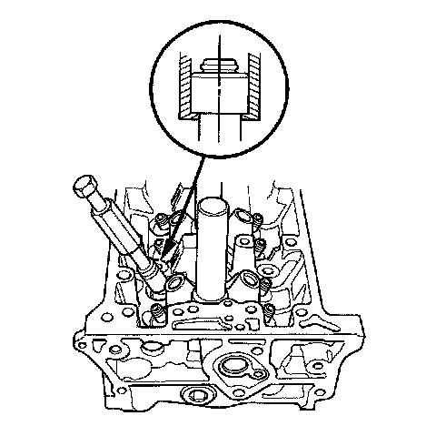
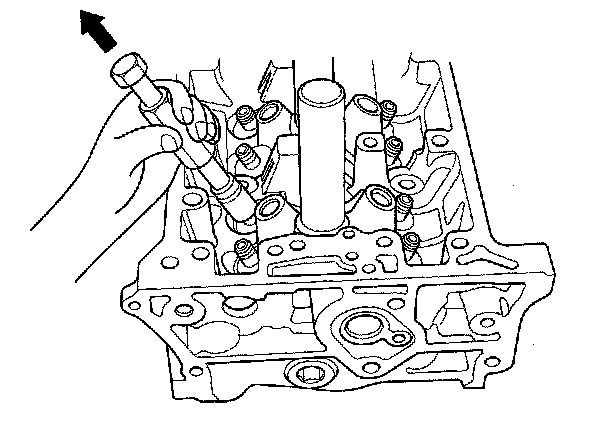

Valve, Spring, and Valve Seal Removal
Valve, Spring, and Valve Seal RemovalSpecial Tools Required
Valve spring compressor attachment 07757-PJ1010A
Identify the valves and valve springs as they are removed so that each item can be reinstalled in its original position.
1. Remove the cylinder head.
2. Using an appropriate-sized socket (A) and plastic mallet (B), lightly tap the valve retainer to loosen the valve cotters.

3. Install the valve spring compressor attachment and valve spring compressor. Compress the spring, and remove the valve cotters.

4. Remove the valve spring compressor attachment and valve spring compressor, then remove the valve retainer and valve spring.
5. Install the valve guide seal remover.

6. Remove the valve seal.
